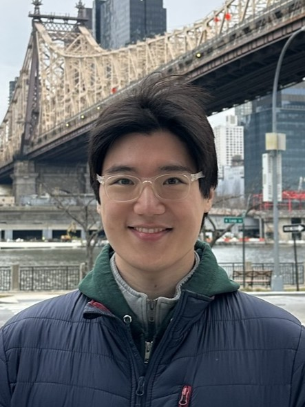

E-mail: jchang243 at wisc dot edu

About: I am a fifth-year statistics PhD student at the University of Wisconsin–Madison receiving academic guidance from Professor Joshua Cape.
I am interested in the statistical inference of latent low-dimensional objects and low-rank structures hidden in noisy high-dimensional data. The focus of my research has been on fine-grained asymptotic and non-asymptotic distributional analyses of spectral embeddings in the matrix denoising model.
[Preprint]
© 2026 Junhyung Chang. Last updated: 2026-10-29.